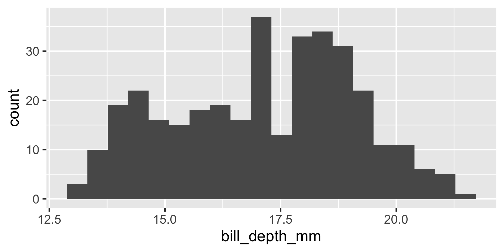

penguins <- penguins |>
mutate(
z_bill_length_mm = (bill_length_mm - mean(bill_length_mm, na.rm = TRUE)) /
sd(bill_length_mm, na.rm = TRUE),
z_bill_depth_mm = (bill_depth_mm - mean(bill_length_mm, na.rm = TRUE)) /
sd(bill_depth_mm, na.rm = TRUE),
z_flipper_length_mm = (flipper_length_mm -
mean(flipper_length_mm, na.rm = TRUE)) /
sd(flipper_length_mm, na.rm = TRUE),
z_body_mass_g = (body_mass_g - mean(body_mass_g, na.rm = TRUE)) /
sd(body_mass_g, na.rm = TRUE)
)Programming with R: Functions
Parks Canada; Ecological Integrity Monitoring Program
Andy Teucher
Outline
- Motivation
- Fundamentals of functions
Learning objectives
- explain the rationale for writing functions
- write vector functions
- that take a vector as input and output a vector
- that take a vector as input and output a single value
- specify defaults for function arguments
- write functions that take dataframes as input and output a dataframe
Why write functions?
- Make code easier to read and understand
- Make code shorter
- Make code less error-prone
- Make code reusable
Example: Penguins
We have several measurements:
bill_length_mmbill_depth_mmflipper_length_mmbody_mass_g
These are on very different scales




Example
difficult to plot on same axis or determine what value is large for that variable
A common solution is to apply a \(z\) score transformation to each variable.
Normalises the values to have a mean of 0 and a standard deviation of 1
\[z = \frac{x - \bar{x}}{s.d.}\]
Apply transformation
We can apply the same transformation to each variable:
Long, unclear
(bill_length_mm - mean(bill_length_mm, na.rm = TRUE)) / sd(bill_length_mm, na.rm = TRUE)
- Quite a lot of code
- Difficult to glance at and determine what the transformation is
How to shorten and make more clear?
Copying and pasting
- Is error prone
- Did anyone catch my mistake in the example?
What is a function?
A named object that:
- Takes inputs (arguments)
- Performs a specific task
- Returns outputs (results)
Vector functions
- take one or more vectors as input
- output same length as input
- work well in
mutate() - appropriate for the z-transformation example
Parts of a function
To turn your code into a function you need:
- a name
- the arguments - (the pieces that vary)
- the body (the code that does the thing)
Function name
- Use a verb or a clear descriptive phrase. Long is ok!
- Difficulty in naming? Maybe this should this be two or three functions?
- What should we call the function we write to do a \(z\) score transformation?
Arguments
the input vector
additional arguments
Naming conventions
- x for the vector input
Return value
- Output - what the function returns to the user
- By default, the last expression evaluated is returned
- Using explicit
return()is optional but not considered best practice in R (though common in other languages).
explicit return statement
implicit return of last named object
implicit return of last expression
Example
\[z = \frac{x - \bar{x}}{s.d.}\]
penguins <- penguins |>
mutate(
z_bill_length_mm = (bill_length_mm - mean(bill_length_mm, na.rm = TRUE)) / sd(bill_length_mm, na.rm = TRUE),
z_bill_depth_mm = (bill_depth_mm - mean(bill_depth_mm, na.rm = TRUE)) / sd(bill_depth_mm, na.rm = TRUE),
z_flipper_length_mm = (flipper_length_mm - mean(flipper_length_mm, na.rm = TRUE)) / sd(flipper_length_mm, na.rm = TRUE),
z_body_mass_g = (body_mass_g - mean(body_mass_g, na.rm = TRUE)) / sd(body_mass_g, na.rm = TRUE)
)Example
Identify the arguments: the things that vary across calls
(bill_length_mm - mean(bill_length_mm, na.rm = TRUE)) / sd(bill_length_mm, na.rm = TRUE)
(bill_depth_mm - mean(bill_depth_mm, na.rm = TRUE)) / sd(bill_depth_mm, na.rm = TRUE)
(flipper_length_mm - mean(flipper_length_mm, na.rm = TRUE)) / sd(flipper_length_mm, na.rm = TRUE)
(body_mass_g - mean(body_mass_g, na.rm = TRUE)) / sd(body_mass_g, na.rm = TRUE)
Example
Put into the template
Apply
Rewrite the call to mutate() as:
Much shorter, much more clear.
A modification
mean() has a trim argument: mean(x, trim = 0, na.rm = FALSE, ...)
the fraction (0 to 0.5) of observations to be trimmed from each end of x before the mean is computed.
Suppose we want to specify the middle proportion left rather than the proportion trimmed from each end.
A modification
A value of 0.1 for
trimtrims 0.1 from each end leaving 0.8 in the middletrim = (1 - middle)/2
Trim is the proportion trimmed off each end; middle is what’s left
Add an argument
Try it out
[1] -0.92838057 -0.85511491 -0.70858359 NA -1.36797452 -0.89174774 -0.96501340 -0.91006415
[9] -1.84420131 -0.39720454 -1.16649396 -1.16649396 -0.56205227 -1.01996264 -1.75261923 -1.38629094
[17] -1.00164623 -0.30562246 -1.78925206 0.33545205 -1.16649396 -1.18481038 -1.51450584 -1.09322830
[25] -0.98332981 -1.62440433 -0.65363435 -0.67195076 -1.14817755 -0.67195076 -0.85511491 -1.27639245
[33] -0.85511491 -0.59868510 -1.42292377 -0.91006415 -0.98332981 -0.36057171 -1.20312679 -0.80016566
[41] -1.40460735 -0.61700152 -1.49618943 -0.01255983 -1.31302528 -0.83679849 -0.56205227 -1.22144320
[49] -1.49618943 -0.34225529 -0.83679849 -0.74521642 -1.67935358 -0.39720454 -1.77093565 -0.50710303
[57] -0.94669698 -0.65363435 -1.40460735 -1.20312679 -1.55113867 -0.52541944 -1.20312679 -0.56205227
[65] -1.42292377 -0.47047020 -1.58777150 -0.56205227 -1.51450584 -0.43383737 -1.95409980 -0.81848208
[73] -0.83679849 0.29881922 -1.58777150 -0.25067322 -0.59868510 -1.27639245 -1.45955660 -0.37888812
[81] -1.75261923 -0.23235681 -1.36797452 -1.66103716 -1.25807603 -0.52541944 -1.44124018 -1.33134169
[89] -1.07491189 -0.96501340 -1.55113867 -0.56205227 -1.86251772 -0.83679849 -1.45955660 -0.61700152
[97] -1.11154472 -0.70858359 -2.02736546 -0.17740756 -1.67935358 -0.58036869 -1.18481038 -1.16649396
[105] -1.14817755 -0.81848208 -1.01996264 -1.09322830 -1.11154472 -0.17740756 -1.11154472 0.26218639
[113] -0.81848208 -0.36057171 -0.83679849 -0.26898963 -1.01996264 -1.25807603 -1.55113867 -0.56205227
[121] -1.45955660 -1.18481038 -0.72690000 -0.50710303 -1.64272075 -0.65363435 -0.98332981 -0.48878661
[129] -0.94669698 -0.01255983 -1.03827906 -0.19572398 -1.34965811 -1.22144320 -1.11154472 -0.56205227
[137] -1.56945509 -0.72690000 -1.31302528 -0.81848208 -0.72690000 -0.65363435 -2.21052960 -0.63531793
[145] -1.25807603 -0.94669698 -0.91006415 -1.38629094 -1.49618943 -1.16649396 -1.49618943 -0.48878661
[153] 0.35376847 1.06810865 0.82999525 1.06810865 0.62851469 0.42703413 0.22555357 0.46366696
[161] -0.15909115 0.48198337 -0.59868510 0.88494450 0.24386998 0.77504601 0.29881922 0.93989374
[169] -0.39720454 0.92157733 0.37208488 0.82999525 1.10474148 0.17060432 0.42703413 0.39040130
[177] -0.23235681 0.35376847 0.06070583 0.66514752 0.73841318 1.06810865 0.57356545 -0.25067322
[185] 0.17060432 2.82648447 0.90326091 0.77504601 -0.28730605 0.04238942 -0.03087624 0.82999525
[193] -0.26898963 0.99484299 0.20723715 0.99484299 1.15969072 -0.10414190 0.24386998 1.15969072
[201] 0.13397149 0.18892074 0.44535054 0.79336242 0.17060432 1.08642506 0.42703413 0.15228791
[209] -0.06750907 0.24386998 -0.17740756 1.14137431 0.20723715 0.37208488 0.28050281 1.85571448
[217] 0.29881922 1.03147582 0.37208488 0.97652657 -0.12245832 1.19632355 0.64683111 0.40871771
[225] 0.73841318 0.42703413 0.40871771 0.81167884 0.61019828 1.26958921 0.18892074 0.18892074
[233] 0.90326091 1.52601902 0.59188186 1.06810865 0.13397149 1.21463997 -0.14077473 1.30622204
[241] 0.61019828 1.45275336 0.61019828 1.47106977 0.24386998 0.97652657 0.06070583 1.21463997
[249] 0.95821016 0.50029979 0.77504601 1.26958921 0.79336242 2.14877712 0.55524903 0.90326091
[257] 0.57356545 0.48198337 -0.45215378 1.69086675 -0.15909115 0.72009677 1.15969072 1.03147582
[265] -0.12245832 1.34285487 0.37208488 2.00224580 0.06070583 0.84831167 0.55524903 NA
[273] 0.48198337 1.14137431 0.18892074 1.04979223 0.42703413 1.06810865 1.30622204 0.22555357
[281] 1.56265185 0.18892074 0.35376847 1.30622204 0.33545205 1.30622204 0.44535054 1.37948770
[289] 0.51861620 1.43443694 0.31713564 1.15969072 1.12305789 2.53342183 0.40871771 0.92157733
[297] -0.32393888 0.79336242 -0.17740756 1.17800714 0.46366696 1.43443694 1.15969072 0.97652657
[305] 0.40871771 1.58096826 -0.59868510 1.83739807 -0.30562246 1.25127279 1.01315940 0.61019828
[313] 0.62851469 1.43443694 0.50029979 1.70918316 0.88494450 0.37208488 1.23295638 0.24386998
[321] 1.23295638 1.21463997 1.08642506 0.88494450 1.34285487 1.03147582 0.72009677 1.32453845
[329] 0.28050281 1.19632355 -0.30562246 1.47106977 0.18892074 0.93989374 1.10474148 0.26218639
[337] 1.41612053 0.48198337 0.28050281 2.13046071 -0.12245832 0.99484299 1.21463997 1.10474148But what if we forget?
Give a default
Give defaults whenever possible:
Try it out
[1] -0.88320467 -0.80993901 -0.66340769 NA -1.32279862 -0.84657184 -0.91983750 -0.86488825
[9] -1.79902541 -0.35202864 -1.12131806 -1.12131806 -0.51687637 -0.97478674 -1.70744334 -1.34111504
[17] -0.95647033 -0.26044656 -1.74407616 0.38062795 -1.12131806 -1.13963448 -1.46932994 -1.04805240
[25] -0.93815391 -1.57922843 -0.60845845 -0.62677486 -1.10300165 -0.62677486 -0.80993901 -1.23121655
[33] -0.80993901 -0.55350920 -1.37774787 -0.86488825 -0.93815391 -0.31539581 -1.15795089 -0.75498976
[41] -1.35943145 -0.57182562 -1.45101353 0.03261607 -1.26784938 -0.79162259 -0.51687637 -1.17626731
[49] -1.45101353 -0.29707939 -0.79162259 -0.70004052 -1.63417768 -0.35202864 -1.72575975 -0.46192713
[57] -0.90152108 -0.60845845 -1.35943145 -1.15795089 -1.50596277 -0.48024354 -1.15795089 -0.51687637
[65] -1.37774787 -0.42529430 -1.54259560 -0.51687637 -1.46932994 -0.38866147 -1.90892390 -0.77330618
[73] -0.79162259 0.34399512 -1.54259560 -0.20549732 -0.55350920 -1.23121655 -1.41438070 -0.33371222
[81] -1.70744334 -0.18718091 -1.32279862 -1.61586126 -1.21290014 -0.48024354 -1.39606428 -1.28616579
[89] -1.02973599 -0.91983750 -1.50596277 -0.51687637 -1.81734182 -0.79162259 -1.41438070 -0.57182562
[97] -1.06636882 -0.66340769 -1.98218956 -0.13223166 -1.63417768 -0.53519279 -1.13963448 -1.12131806
[105] -1.10300165 -0.77330618 -0.97478674 -1.04805240 -1.06636882 -0.13223166 -1.06636882 0.30736229
[113] -0.77330618 -0.31539581 -0.79162259 -0.22381374 -0.97478674 -1.21290014 -1.50596277 -0.51687637
[121] -1.41438070 -1.13963448 -0.68172411 -0.46192713 -1.59754485 -0.60845845 -0.93815391 -0.44361071
[129] -0.90152108 0.03261607 -0.99310316 -0.15054808 -1.30448221 -1.17626731 -1.06636882 -0.51687637
[137] -1.52427919 -0.68172411 -1.26784938 -0.77330618 -0.68172411 -0.60845845 -2.16535371 -0.59014203
[145] -1.21290014 -0.90152108 -0.86488825 -1.34111504 -1.45101353 -1.12131806 -1.45101353 -0.44361071
[153] 0.39894437 1.11328455 0.87517115 1.11328455 0.67369059 0.47221003 0.27072946 0.50884286
[161] -0.11391525 0.52715927 -0.55350920 0.93012040 0.28904588 0.82022191 0.34399512 0.98506964
[169] -0.35202864 0.96675323 0.41726078 0.87517115 1.14991738 0.21578022 0.47221003 0.43557720
[177] -0.18718091 0.39894437 0.10588173 0.71032342 0.78358908 1.11328455 0.61874135 -0.20549732
[185] 0.21578022 2.87166037 0.94843681 0.82022191 -0.24213015 0.08756532 0.01429966 0.87517115
[193] -0.22381374 1.04001889 0.25241305 1.04001889 1.20486662 -0.05896600 0.28904588 1.20486662
[201] 0.17914739 0.23409663 0.49052644 0.83853832 0.21578022 1.13160096 0.47221003 0.19746381
[209] -0.02233317 0.28904588 -0.13223166 1.18655021 0.25241305 0.41726078 0.32567871 1.90089038
[217] 0.34399512 1.07665172 0.41726078 1.02170247 -0.07728242 1.24149945 0.69200701 0.45389361
[225] 0.78358908 0.47221003 0.45389361 0.85685474 0.65537418 1.31476511 0.23409663 0.23409663
[233] 0.94843681 1.57119492 0.63705776 1.11328455 0.17914739 1.25981586 -0.09559883 1.35139794
[241] 0.65537418 1.49792926 0.65537418 1.51624567 0.28904588 1.02170247 0.10588173 1.25981586
[249] 1.00338606 0.54547569 0.82022191 1.31476511 0.83853832 2.19395302 0.60042493 0.94843681
[257] 0.61874135 0.52715927 -0.40697788 1.73604265 -0.11391525 0.76527266 1.20486662 1.07665172
[265] -0.07728242 1.38803077 0.41726078 2.04742170 0.10588173 0.89348757 0.60042493 NA
[273] 0.52715927 1.18655021 0.23409663 1.09496813 0.47221003 1.11328455 1.35139794 0.27072946
[281] 1.60782775 0.23409663 0.39894437 1.35139794 0.38062795 1.35139794 0.49052644 1.42466360
[289] 0.56379210 1.47961284 0.36231154 1.20486662 1.16823379 2.57859773 0.45389361 0.96675323
[297] -0.27876298 0.83853832 -0.13223166 1.22318303 0.50884286 1.47961284 1.20486662 1.02170247
[305] 0.45389361 1.62614416 -0.55350920 1.88257397 -0.26044656 1.29644869 1.05833530 0.65537418
[313] 0.67369059 1.47961284 0.54547569 1.75435906 0.93012040 0.41726078 1.27813228 0.28904588
[321] 1.27813228 1.25981586 1.13160096 0.93012040 1.38803077 1.07665172 0.76527266 1.36971435
[329] 0.32567871 1.24149945 -0.26044656 1.51624567 0.23409663 0.98506964 1.14991738 0.30736229
[337] 1.46129643 0.52715927 0.32567871 2.17563660 -0.07728242 1.04001889 1.25981586 1.14991738Your turn
See if you can add another argument to to_z() to allow the user to specify if NA values should be removed or not. Give it a default value.
Your turn
Create a function called percent_diff that calculates the percent difference between two (vectors of) values:
\[\%diff = \frac{|a - b|}{((a + b)/2)} * 100\]
- Hint: you can use the
abs()function to calculate the absolute value.
Your turn
Create a function called is_big() that takes a numeric vector and outputs a logical vector indicating whether each value is larger than a specified quantile threshold.
- The function should have two arguments: the numeric vector and the quantile threshold (default to 0.75).
Types of function
vector functions: one or more vectors as input, one vector as output
- ✔️ output same length as input.
ii. ➡️ summary functions: input is vector, output is a single value
data frame functions: df as input and df as output
Summary functions
- input is vector
- output is a single value
- could be used in
summarise()
Example
Write a function to compute the standard error of a sample.
\[s.e. = \frac{s.d.}{\sqrt{n}}\]
Example
Note: sum(TRUE) = 1 and sum(FALSE) = 0 Thus,sum(!is.na(x)) gives you the number of TRUE (i.e., the number of non-NA values) and is a bit shorter than length(x[!is.na(x)])
Try it out
Call the function on penguins$bill_length_mm
Your turn
Write a function to compute the sums of squares (sum of the squared deviations from the mean). This can be calculated with either:
\[SS(x) = \sum{(x - \bar{x})^2}\]
or
\[SS(x) = s^2 * (n-1)\]
A solution - one option
OR
Types of function
We will cover two types of function
vector functions: one or more vectors as input, one vector as output
✔️ output same length as input.
✔️ summary functions: input is vector, output is a single value
2. ➡️ data frame functions: df as input and df as output
Dataframe functions
Dataframe as input and Dataframe as output
For example, we might summarise one of our columns like this:
# A tibble: 1 × 4
mean n sd se
<dbl> <int> <dbl> <dbl>
1 43.9 342 5.46 0.295Output is a dataframe
Dataframe functions
Good candidate for a function to avoid repetitive code: my_summary()
Define my_summary() function
Use function
Error in `summarise()`:
ℹ In argument: `mean = mean(column, na.rm = TRUE)`.
Caused by error:
! object 'bill_length_mm' not found😕
Tidy evaluation
tidyverse functions like dplyr::summarise() use “tidy evaluation” so you can refer to the names of variables inside dataframes. For example, you can use:
either
Or
Tidy evaluation
This is instead of having to use the full dataframe name with $, e.g.
This is known as data-masking: the dataframe environment masks the user environment by giving priority to the dataframe.
Data masking is great….
and makes life easier when working interactively
But kind of annoying in functions
Because of data-masking, summarise() in my_summary() is looking for a column literally called column in the dataframe that has been passed in. It is not looking inside the variable column for the name of column you want to give it.
Read more: Programming with dplyr
Fix my_summary() function
The solution is to use embracing: {{ var }}
- tells
summarize()to look insidecolumnvariable to get the column name - style with spaces
.groups = "drop"to avoid message and leave the data in an ungrouped state
Use function
# A tibble: 1 × 4
mean n sd se
<dbl> <int> <dbl> <dbl>
1 43.9 342 5.46 0.295🎉
When to embrace?
When tidy evaluation is used
Your turn
Write a new summary function which calculates the median, maximum and minimum values of a variable in a dataset. Incorporate an argument to allow the summary to be performed grouped by another variable.
Your turn
Try it out
Your turn
Improvement: Have a default of NULL for the grouping variable. Why?
Your turn
Try it out
Your turn
Try it out with more than one group
Error in `group_by()`:
ℹ In argument: `c(species, island)`.
Caused by error:
! `c(species, island)` must be size 344 or 1, not 688.😕
A solution
Use pick() which allows you to select a subset of columns inside a data masking function:
Try it out with more than one group
Functions should be “pure”
- Should not depend on external state (e.g., global variables)
- Should not have side effects (e.g., modifying global variables, printing to console, plotting, etc.)
- Given the same inputs, should always return the same outputs
Functions - data validation and error handling
It’s good practice to include data validation and error handling in your functions to ensure they behave as expected when given incorrect or unexpected inputs.
- Use
ifstatements to check that inputs meet certain criteria or if specific conditions are met. - Use
stop()to throw anErrorif issues are serious enough that it should not proceed. - Use
warning()to issue aWarningfor non-critical issues.
Errors
- Warnings are often used later in the execution if the result to be returned is cause for concern. (e.g., result is all
NA). It is a signal to the user to check the results carefully.
Example
If a function expects two numeric vectors of the same length, you should check and stop the if they are not.
Your turn
Add a check to
my_summary()to ensure that thesummary_varis numeric. If not, throw an error.Add a warning to
to_z()if the input vector has fewer than 3 non-NA values, since the standard deviation may not be meaningful in that case.
Practical use of functions in a project
- Functions can be stored in separate R scripts and sourced into your analysis scripts
- This keeps your analysis scripts cleaner and more focused on the analysis logic
- It is best practice to keep your functions in a dedicated folder called
R/ - Then in the top of your scripts you can use
source("R/your_function.R")to load them
Documenting functions
- Use
roxygen2style comments to document your functions - In Positron - put your cursor on the name of the function and click the 💡 and choose “Generate a Roxygen Template”
Summary ☕
Writing functions can make you more efficient and make your code more readable. This can be just for your benefit.
Vector functions take one or more vectors as input; their output can be a vector (useful in
mutate()andfilter()) or a single value (useful insummarise()).Dataframe functions take a dataframe as input and give a dataframe as output
Give arguments a default where possible
We use
{ var }embracing to manage data maskingWe use
pick({{ vars }})to select more than one variableInclude data validation and error handling in your functions